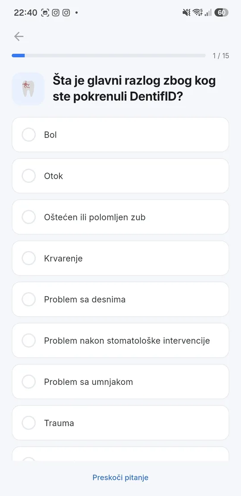
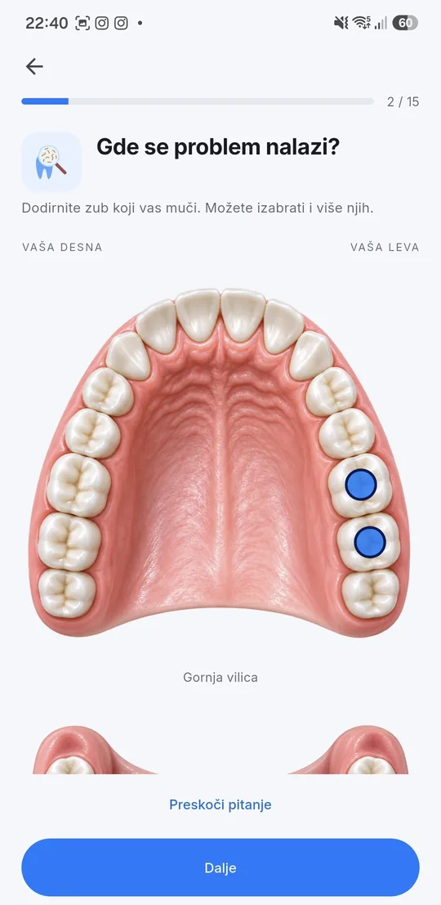
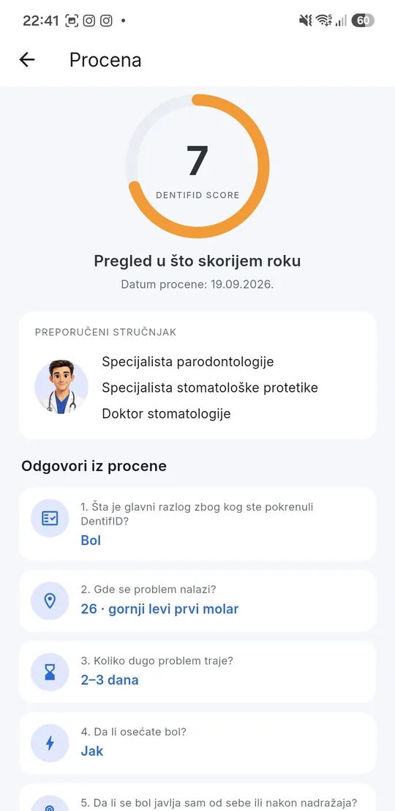
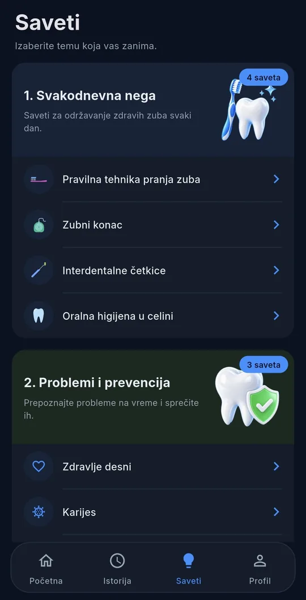

Koliko je hitan vaš problem sa zubima?
DentifID kroz kratak upitnik daje procenu hitnosti i predlog specijaliste kome da se obratite. Za trenutak kada vas nešto muči, a niste sigurni koliko brzo treba kod stomatologa.
Besplatno · Android 7.0 ili noviji · 63 MB
- 17 pitanja
- 4 nivoa hitnosti
- bez reklama
Dodirnite zub i pogledajte kako procena izgleda.
Vaša desna
Vaša leva
0
DentifID SCORE
Pregled u što skorijem roku
- Sadržaj pregledao stomatolog
- Bez reklama i praćenja
- Radi i za decu
Kako radi
Tri koraka do procene
-
Odgovorite na pitanja.
Upitnik za odrasle ima 17 osnovnih pitanja, dečji 12. Pitanja se prilagođavaju vašim odgovorima.
-
Označite zub.
Na slici gornje i donje vilice dodirnite zub na kom je problem.
-
Dobijete procenu.
DentifID SCORE od 1 do 10, nivo hitnosti i predlog specijaliste kome da se javite.
U aplikaciji
Od pitanja do rezultata
Pitanje po pitanje
Jedno pitanje po ekranu, sa napretkom kroz upitnik. Odrasli odgovaraju na 17 osnovnih pitanja, deca na 12.
Izbor zuba
Na slici gornje i donje vilice zub se bira dodirom. Stalni zubi za odrasle, mlečni za decu.
Rezultat
DentifID SCORE od 1 do 10, nivo hitnosti u svojoj boji i predlog specijaliste. Kada ih ima, tu su i razlozi pod „Zašto ovaj rezultat”.



Rezultat
Četiri nivoa hitnosti
Uz ocenu od 1 do 10 aplikacija daje jedan od četiri nivoa i predlog specijaliste kome da se javite.
- Rutinska stomatološka kontrola 1–3
- Preporučen stomatološki pregled 4–6
- Pregled u što skorijem roku 7–8
- Urgentno stanje 9–10
Šta aplikacija nije
Aplikacija ne postavlja dijagnozu i ne zamenjuje pregled kod stomatologa. Procena se oslanja isključivo na odgovore koje date, a konačnu ocenu vašeg stanja uvek daje stomatolog koji vas pregleda uživo.
Uz procenu
Šta još dobijate
-
Procena za dete.
Kroz dečji profil u vašem nalogu, upitnik prilagođen deci i mlečnim zubima.
-
Istorija procena.
Svaka završena procena ostaje sačuvana, sa datumom, rezultatom i vašim odgovorima.
-
Stomatološki karton.
Poslednji pregled, čišćenje kamenca, sledeći termin, podaci o stomatologu, intervencije, terapije i alergije.
-
Podsetnici.
Aplikacija vas na osnovu datuma iz kartona podseti na kontrolni pregled, čišćenje kamenca i zakazan termin.
-
Devet saveta o nezi zuba.
Tekstove je napisao i odobrio stomatolog.
-
Svetla i tamna tema.
Bez reklama i bez praćenja vašeg ponašanja.

Znaci hitnog stanja
Ako imate otežano disanje ili gutanje, jak otok lica, obilno krvarenje ili drugi znak hitnog stanja, ne čekajte rezultat procene — odmah pozovite hitnu službu na 194.
Preuzimanje
Preuzmite DentifID
Aplikacija se za sada preuzima sa ove strane, a ne iz prodavnice. Instalacija traje minut.
- Dodirnite dugme ispod ili skenirajte QR kod telefonom.
- Kad se fajl preuzme, otvorite ga.
- Android će pitati da dozvolite instalaciju iz ovog izvora — potvrdite.
- Otvorite aplikaciju i napravite nalog.
Ako se javi Play Protect sa porukom da programer nije poznat, izaberite „Ipak instaliraj”. Tu poruku pokazuje svaki telefon za aplikacije koje ne dolaze iz prodavnice.
Preuzmi APK (verzija 1.0.1)dentifid.rs/#preuzimanje
- Verzija
- 1.0.1
- Veličina
- 62,9 MB
- Najstariji Android
- 7.0 (API 24)
- SHA-256
-
879a6f688db8f11e3741e7f05a865894e3913398ead967e9f349b31bd92ef791